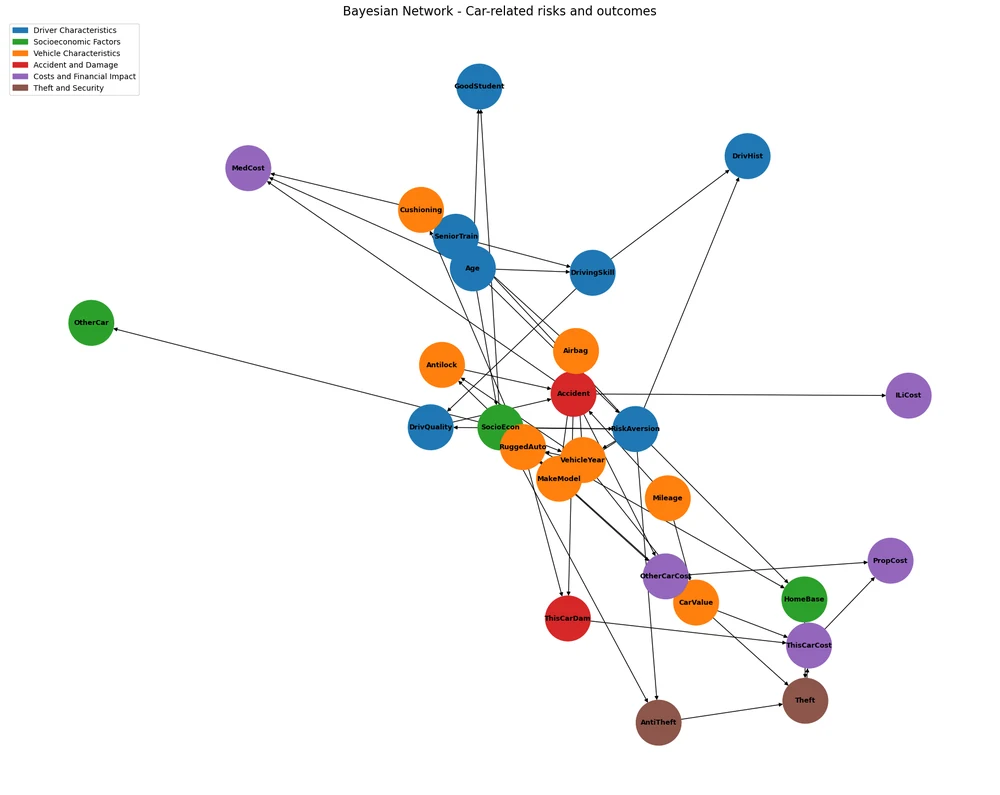
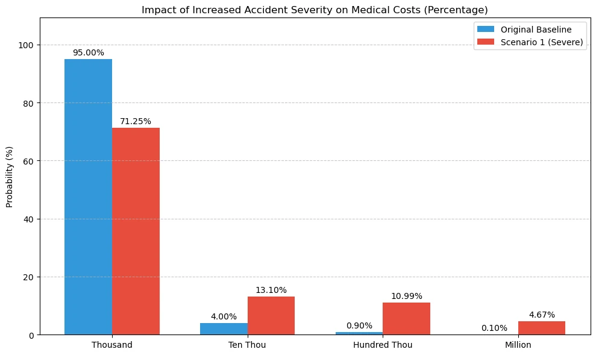
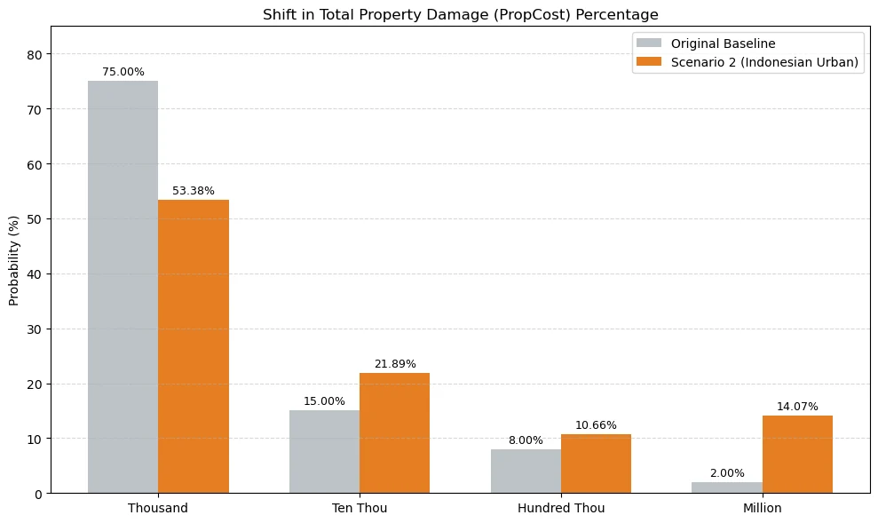

Home / Projects / Bayesian network and CRF
Risk modeling and event classification with Bayesian networks and CRFs
- Part A
- 27-node Bayesian network"insurance" benchmark, sensitivity analysis on its probability tables
- Part B
- 0.97 weighted F1CRF event tagging, held-out test set
- Overfitting check
- F1 0.972 / 0.970 / 0.965train / validation / test, second run
01Part A: how a risk shift propagates through a Bayesian network
The model is the standard "insurance" benchmark network, a directed acyclic graph of 27 nodes linking socioeconomic factors and age to driver traits, accident likelihood, and the costs that follow. The task was a sensitivity analysis: change the conditional probability distributions of chosen nodes to reflect different scenarios, run inference, and trace how the change spreads to related nodes.

Scenario 1: more severe accidents
With pgmpy the team defined scenarios and edited the probability tables to match them: a higher probability of severe accidents, more vehicle theft in dense Indonesian cities, and a more realistic repair-cost table (in the original, a severe accident almost deterministically meant a repair cost in the million range, 97%). For each scenario the team re-ran inference and compared the affected cost nodes with the baseline.
The write-up concludes, for example, that a moderate rise in severe accidents significantly increases medical and repair cost exposure.

Scenario 2: an Indonesian urban setting
The second scenario models a significant rise in vehicle theft in high-density Indonesian cities. Total property damage shifts toward the higher cost bands. The write-up also notes that the benchmark reflects a generic insurance setting that ignores regional and emerging socioeconomic risks.

02Part B: tagging financial events in text with a CRF
A Conditional Random Field labels each token of a document as the beginning or continuation of one of four event types (merger, acquisition, earnings, stock movement) or as a non-event token, which makes the task a sequence-labelling problem where neighbouring labels matter. The input features were word and part-of-speech information from a window of neighbouring tokens, plus keyword features for each event type.
On the held-out test set the model reached a weighted F1 of 0.974. Token-level accuracy is flattered by the large "other" class, so the team read per-class scores alongside it. A second, systematic comparison of hyperparameter settings split the data into train, validation and test sets and compared F1 across them (0.972, 0.970, 0.965), to check that the model was not simply memorising the training data. The small train-test gap suggests it was not.
My role
This was a team of three. The submitted work is a joint report; the repository history does not break down who wrote which part, so I describe the project as collaborative and have not claimed individual credit for any one section.
Code: notebook on GitHub. Input data and the written report are not published.
Reading the score. Most tokens are not events, so overall accuracy looks high almost by default. The weighted F1 and the per-class scores in the notebook are the fairer measures.